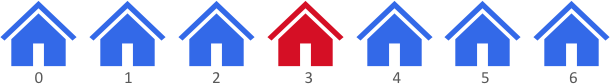
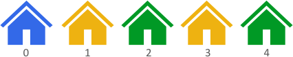

| Category | Difficulty | Likes | Dislikes |
|---|---|---|---|
| Algorithms | Easy | 1004 | 33 |
google | facebook | visa
There are n houses evenly lined up on the street, and each house is beautifully painted. You are given a 0-indexed integer array colors of length n, where colors[i] represents the color of the ith house.
Return the maximum distance between two houses with different colors.
The distance between the ith and jth houses is abs(i - j), where abs(x) is the absolute value of x.
Example 1:

Input: colors = [1,1,1,6,1,1,1]
Output: 3
Explanation: In the above image, color 1 is blue, and color 6 is red.
The furthest two houses with different colors are house 0 and house 3.
House 0 has color 1, and house 3 has color 6. The distance between them is abs(0 - 3) = 3.
Note that houses 3 and 6 can also produce the optimal answer.Example 2:

Input: colors = [1,8,3,8,3]
Output: 4
Explanation: In the above image, color 1 is blue, color 8 is yellow, and color 3 is green.
The furthest two houses with different colors are house 0 and house 4.
House 0 has color 1, and house 4 has color 3. The distance between them is abs(0 - 4) = 4.Example 3:
Input: colors = [0,1]
Output: 1
Explanation: The furthest two houses with different colors are house 0 and house 1.
House 0 has color 0, and house 1 has color 1. The distance between them is abs(0 - 1) = 1.
Constraints:
n == colors.length2 <= n <= 1000 <= colors[i] <= 100